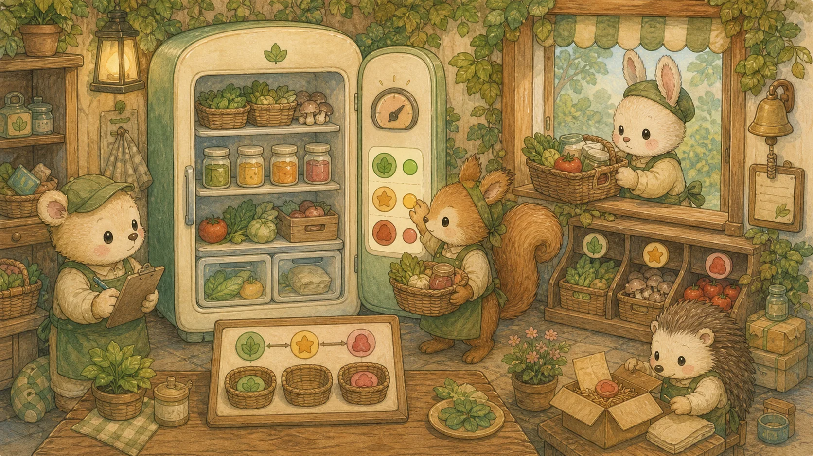

Chapter 06: 고급 React · Zustand · React Hook Form + Zod
Custom Hook, React.memo 최적화, 데이터 페칭(TanStack Query), Error Boundary, Zustand 전역 상태 관리(persist 미들웨어), 그리고 React Hook Form + Zod로 쇼핑몰 주문 폼까지 — 백엔드 Bean Validation과 짝을 이루는 실무 React 아키텍처를 10개 섹션으로 완전 정복합니다.
⚛️ A. 고급 컴포넌트 패턴
1. Custom Hook — 로직 재사용의 핵심
여러 컴포넌트에서 반복되는 useState + useEffect 조합을 하나의 함수로 추출하여 재사용합니다. 이름은 반드시 use로 시작해야 합니다.
💡 비유로 이해하기: 나만의 도구 키트
매번 바늘, 실, 가위를 따로 챙기는 대신 "바느질 키트(useProductDetail)"라는 상자 하나에 담아두고 필요할 때 상자만 꺼내는 것입니다.
// 1. API 데이터 페칭 커스텀 훅
import { useState, useEffect } from "react";
export function useFetch(url) {
const [data, setData] = useState(null);
const [loading, setLoading] = useState(true);
const [error, setError] = useState(null);
useEffect(() => {
setLoading(true);
fetch(url)
.then(res => {
if (!res.ok) throw new Error(`HTTP ${res.status}`);
return res.json();
})
.then(setData)
.catch(setError)
.finally(() => setLoading(false));
}, [url]);
return { data, loading, error }; // 어디서든 꺼내 쓰기!
}
// 사용: const { data, loading, error } = useFetch("/api/products");
// 2. 디바운스 훅 — 검색어 입력 시 API 호출 횟수 줄이기
export function useDebounce(value, delay = 300) {
const [debouncedValue, setDebouncedValue] = useState(value);
useEffect(() => {
const timer = setTimeout(() => setDebouncedValue(value), delay);
return () => clearTimeout(timer); // 클린업!
}, [value, delay]);
return debouncedValue;
}
// 사용: const debouncedQuery = useDebounce(searchQuery, 500);
// 3. 로컬 스토리지 훅 — 새로고침해도 상태 유지
export function useLocalStorage(key, initialValue) {
const [value, setValue] = useState(() => {
const stored = localStorage.getItem(key);
return stored ? JSON.parse(stored) : initialValue;
});
useEffect(() => {
localStorage.setItem(key, JSON.stringify(value));
}, [key, value]);
return [value, setValue]; // useState와 동일한 인터페이스!
}2. React.memo — 불필요한 리렌더링 차단
부모가 리렌더링되면 자식도 무조건 리렌더링됩니다. React.memo로 감싸면 props가 변경되지 않은 자식의 리렌더링을 건너뜁니다.
import { memo } from "react";
// memo로 감싸면, product prop이 변경되지 않으면 리렌더링 건너뜀!
const ProductCard = memo(function ProductCard({ product, onAddToCart }) {
console.log(`렌더링: ${product.name}`); // prop 변경 시에만 찍힘
return (
<div className="glass-panel">
<h3>{product.name}</h3>
<p>{product.price.toLocaleString()}원</p>
<button onClick={() => onAddToCart(product.id)}>담기</button>
</div>
);
});
// ⚠️ 주의: onAddToCart 같은 콜백 함수를 매번 새로 만들면 memo가 무력화됨!
// 해결: 부모에서 useCallback으로 함수 참조 고정
const handleAddToCart = useCallback((id) => {
// 장바구니 추가 로직
}, []);3. Error Boundary — 컴포넌트 에러 격리
자식 컴포넌트에서 에러가 터지면 앱 전체가 하얀 화면이 됩니다. Error Boundary로 에러를 격리하여 해당 영역만 대체 UI를 보여줍니다.
// Error Boundary (클래스 컴포넌트만 가능!)
class ErrorBoundary extends React.Component {
state = { hasError: false, error: null };
static getDerivedStateFromError(error) {
return { hasError: true, error };
}
componentDidCatch(error, errorInfo) {
console.error("에러 발생:", error, errorInfo);
// 에러 로깅 서비스(Sentry 등)에 전송
}
render() {
if (this.state.hasError) {
return (
<div className="glass-panel" style={{ textAlign: "center" }}>
<h3>😢 이 영역에서 문제가 발생했습니다</h3>
<button onClick={() => this.setState({ hasError: false })}>
다시 시도
</button>
</div>
);
}
return this.props.children;
}
}
// 사용: 에러가 터져도 헤더/푸터는 정상 유지!
// <ErrorBoundary>
// <ProductList /> ← 이 안에서 에러나면 fallback UI 표시
// </ErrorBoundary>📡 B. 데이터 페칭 패턴
4. TanStack Query (React Query) — 서버 상태 관리의 사실상 표준
직접 useEffect + useState로 API를 호출하면 로딩/에러/캐싱/리페칭을 매번 수동 처리해야 합니다. TanStack Query는 이 모든 것을 자동화합니다.
💡 비유로 이해하기: 스마트 냉장고
일반 냉장고(useEffect)는 "음식 사러 가기 → 넣기 → 유통기한 확인 → 상한 거 버리기"를 수동으로 합니다. TanStack Query(스마트 냉장고)는 음식이 떨어지면 자동 주문(refetch), 유통기한 자동 관리(staleTime), 같은 음식을 두 번 주문 안 함(캐싱)까지 알아서 합니다.

import { useQuery, useMutation, useQueryClient } from "@tanstack/react-query";
// 1. 데이터 조회: useQuery
function ProductList() {
const { data, isLoading, error } = useQuery({
queryKey: ["products"], // 캐시 키 (고유 식별자)
queryFn: () => fetch("/api/products").then(r => r.json()),
staleTime: 5 * 60 * 1000, // 5분간 캐시 유효 (재요청 안 함)
refetchOnWindowFocus: true, // 탭 전환 시 자동 갱신
});
if (isLoading) return <p>로딩 중...</p>;
if (error) return <p>에러: {error.message}</p>;
return data.map(p => <ProductCard key={p.id} product={p} />);
}
// 2. 데이터 변경: useMutation (POST, PUT, DELETE)
function AddToCartButton({ productId }) {
const queryClient = useQueryClient();
const mutation = useMutation({
mutationFn: (id) => fetch("/api/cart", {
method: "POST",
body: JSON.stringify({ productId: id }),
}),
onSuccess: () => {
// 장바구니 캐시를 무효화하여 자동 재조회!
queryClient.invalidateQueries({ queryKey: ["cart"] });
},
});
return (
<button onClick={() => mutation.mutate(productId)}
disabled={mutation.isPending}>
{mutation.isPending ? "처리 중..." : "장바구니 담기"}
</button>
);
}🐻 C. Zustand 전역 상태 관리
5. Prop Drilling & Context API의 한계
장바구니 데이터처럼 앱 전체가 공유하는 전역 상태를 Props로 대물림하면 중간 컴포넌트들이 쓰지도 않는 데이터를 릴레이해야 합니다.
⚠️ Context API의 한계
Context 값이 1개만 변해도 해당 Context를 구독하는 모든 하위 컴포넌트가 리렌더링됩니다.
장바구니 수량만 변경해도 헤더, 사이드바, 상품 목록 등 전부 리렌더링 → 성능 파괴!
⚡ Zustand의 해결
Selector 기반 구독으로, 해당 값이 변한 컴포넌트만 리렌더링.
useCartStore(s => s.cartItems)만 구독하면, totalPrice가 변해도 이 컴포넌트는 리렌더링되지 않습니다.
6. Zustand Store — 장바구니 전역 저장소 설계
import { create } from "zustand";
export const useCartStore = create((set, get) => ({
// ── 상태 ──
cartItems: [],
// ── 액션 (상태 변경 함수) ──
addToCart: (product) => set((state) => {
const existing = state.cartItems.find(item => item.id === product.id);
if (existing) {
return {
cartItems: state.cartItems.map(item =>
item.id === product.id
? { ...item, qty: item.qty + 1 }
: item
),
};
}
return { cartItems: [...state.cartItems, { ...product, qty: 1 }] };
}),
removeFromCart: (productId) => set((state) => ({
cartItems: state.cartItems.filter(item => item.id !== productId),
})),
clearCart: () => set({ cartItems: [] }),
// ── 파생 상태 (get으로 현재 상태 읽기) ──
getTotalPrice: () => {
return get().cartItems.reduce(
(sum, item) => sum + item.price * item.qty, 0
);
},
getTotalCount: () => {
return get().cartItems.reduce((sum, item) => sum + item.qty, 0);
},
}));7. Zustand Selector — 핀포인트 구독으로 성능 극대화
// 1. 헤더 — 장바구니 개수만 구독 (다른 상태 변경 시 리렌더링 X)
function HeaderCartBadge() {
const totalCount = useCartStore((state) => state.getTotalCount());
return <span className="badge">🛒 {totalCount}</span>;
}
// 2. 장바구니 페이지 — 전체 아이템 구독
function CartPage() {
const cartItems = useCartStore((state) => state.cartItems);
const removeFromCart = useCartStore((state) => state.removeFromCart);
const getTotalPrice = useCartStore((state) => state.getTotalPrice);
return (
<div>
{cartItems.map(item => (
<div key={item.id}>
<span>{item.name} × {item.qty}</span>
<button onClick={() => removeFromCart(item.id)}>삭제</button>
</div>
))}
<p>총 합계: {getTotalPrice().toLocaleString()}원</p>
</div>
);
}
// 3. 상품 상세 — 액션만 구독 (상태 변경에 리렌더링 X!)
function AddToCartButton({ product }) {
const addToCart = useCartStore((state) => state.addToCart);
return <button onClick={() => addToCart(product)}>장바구니 담기</button>;
}8. Zustand 미들웨어 — persist & devtools
persist로 상태를 localStorage에 자동 저장하고, devtools로 Redux DevTools에서 상태 변화를 추적합니다.
import { create } from "zustand";
import { persist, devtools } from "zustand/middleware";
export const useCartStore = create(
devtools( // Redux DevTools 연동
persist( // localStorage 자동 저장
(set, get) => ({
cartItems: [],
addToCart: (product) => set((state) => {
/* ... 위와 동일 ... */
}),
removeFromCart: (id) => set((state) => ({
cartItems: state.cartItems.filter(item => item.id !== id),
})),
clearCart: () => set({ cartItems: [] }),
}),
{
name: "cart-storage", // localStorage 키 이름
// partialize: 저장할 상태만 선택 (함수는 저장 불가!)
partialize: (state) => ({ cartItems: state.cartItems }),
}
),
{ name: "CartStore" } // DevTools에 표시될 이름
)
);📊 D. 상태 관리 비교 & 실전 패턴
9. 상태 관리 라이브러리 비교 — Redux vs Zustand vs Jotai
10. React Hook Form + Zod — 고성능 폼 관리와 스키마 검증
💡 비유로 이해하기: 자필 vs 컴퓨터 양식 작성
useState 폼은 한 글자 칠 때마다 종이를 새로 인쇄하는 격입니다 — 모든 키 입력마다 컴포넌트 전체 리렌더링.
React Hook Form은 종이 위에 직접 펜으로 쓰는 것입니다 — DOM의 ref만 추적, 리렌더링 거의 0회.
복잡한 폼(쇼핑몰 주문 폼: 배송지, 결제 수단, 옵션, 동적 항목)에서 매 입력마다 useState로 리렌더링하면 성능이 급격히 저하됩니다. React Hook Form (RHF)은 비제어(uncontrolled) 방식으로 리렌더링을 최소화하고, Zod 스키마를 결합하면 백엔드 Bean Validation과 일관성까지 잡힙니다.
❌ useState 폼의 한계
각 input마다 useState 호출, 키 입력마다 폼 전체 리렌더링, 검증 로직이 컴포넌트 내부에 흩어짐, 폼 상태 추적 어려움.
✅ RHF + Zod의 강점
ref 기반 비제어 → 리렌더링 0에 가까움. 스키마를 한 곳에 정의 → TS 타입 자동 추론. 백엔드 Bean Validation과 같은 규칙을 공유 가능.
import { useForm } from "react-hook-form";
function SignupForm() {
const {
register, // input 등록 (ref 기반, 리렌더링 X!)
handleSubmit, // 폼 제출 래퍼
formState: { errors, isSubmitting },
} = useForm();
const onSubmit = async (data) => {
await fetch("/api/signup", { method: "POST", body: JSON.stringify(data) });
};
return (
<form onSubmit={handleSubmit(onSubmit)}>
<input {...register("email", {
required: "이메일을 입력하세요",
pattern: { value: /^[A-Z0-9._%+-]+@[A-Z0-9.-]+\.[A-Z]{2,}$/i, message: "올바른 이메일 형식이 아닙니다" },
})} placeholder="이메일" />
{errors.email && <p style={{ color: "red" }}>{errors.email.message}</p>}
<input type="password" {...register("password", {
required: "비밀번호를 입력하세요",
minLength: { value: 8, message: "8자 이상 입력하세요" },
})} placeholder="비밀번호" />
{errors.password && <p style={{ color: "red" }}>{errors.password.message}</p>}
<button type="submit" disabled={isSubmitting}>
{isSubmitting ? "처리 중..." : "가입하기"}
</button>
</form>
);
}위 방식은 검증 규칙이 컴포넌트 안에 흩어집니다. 더 복잡한 폼에선 Zod 스키마로 한 곳에 정의하는 게 정석입니다.
// npm i react-hook-form zod @hookform/resolvers
import { useForm, useFieldArray } from "react-hook-form";
import { zodResolver } from "@hookform/resolvers/zod";
import { z } from "zod";
// 1️⃣ 스키마 정의 — 백엔드 OrderRequest와 1:1 매핑
const orderSchema = z.object({
shippingAddress: z.string()
.min(1, "배송지를 입력하세요")
.max(200, "배송지는 200자 이내"),
phone: z.string()
.regex(/^010-\d{4}-\d{4}$/, "전화번호 형식: 010-1234-5678"),
paymentMethod: z.enum(["CARD", "TRANSFER", "POINT"], {
error: "결제 수단을 선택하세요" // Zod 4: errorMap/message → 통합 error 파라미터
}),
items: z.array(z.object({
productId: z.number().int().positive(),
quantity: z.number().int().min(1, "수량은 1 이상").max(99, "수량은 99 이하"),
})).min(1, "주문 항목은 최소 1개"),
agreeTerms: z.literal(true, {
error: "약관에 동의해야 합니다"
}),
});
// 2️⃣ 타입은 스키마에서 자동 추론!
type OrderFormData = z.infer<typeof orderSchema>;
// 3️⃣ 컴포넌트
export default function OrderForm({ defaultItems }: { defaultItems: { productId: number; quantity: number }[] }) {
const {
register,
control, // useFieldArray 연동용
handleSubmit,
formState: { errors, isSubmitting },
} = useForm<OrderFormData>({
resolver: zodResolver(orderSchema),
defaultValues: { items: defaultItems, agreeTerms: false },
});
// 동적 배열 필드 (장바구니 항목 추가/삭제)
const { fields, append, remove } = useFieldArray({ control, name: "items" });
const onSubmit = async (data: OrderFormData) => {
const res = await fetch("/api/orders", {
method: "POST",
headers: { "Content-Type": "application/json" },
body: JSON.stringify(data),
});
if (!res.ok) {
// 백엔드 ProblemDetail 응답 처리 (Chapter 4 참조)
const problem = await res.json();
console.error("주문 실패:", problem);
}
};
return (
<form onSubmit={handleSubmit(onSubmit)}>
<input {...register("shippingAddress")} placeholder="배송지" />
{errors.shippingAddress && <p>{errors.shippingAddress.message}</p>}
<input {...register("phone")} placeholder="010-1234-5678" />
{errors.phone && <p>{errors.phone.message}</p>}
<select {...register("paymentMethod")}>
<option value="">결제 수단 선택</option>
<option value="CARD">신용카드</option>
<option value="TRANSFER">계좌이체</option>
<option value="POINT">포인트</option>
</select>
{errors.paymentMethod && <p>{errors.paymentMethod.message}</p>}
{/* 동적 항목 — 장바구니 상품 목록 */}
{fields.map((field, idx) => (
<div key={field.id}>
<input
type="number"
{...register(`items.${idx}.quantity`, { valueAsNumber: true })}
min="1"
/>
{errors.items?.[idx]?.quantity && <p>{errors.items[idx].quantity?.message}</p>}
<button type="button" onClick={() => remove(idx)}>삭제</button>
</div>
))}
<label>
<input type="checkbox" {...register("agreeTerms")} />
약관에 동의합니다
</label>
{errors.agreeTerms && <p>{errors.agreeTerms.message}</p>}
<button type="submit" disabled={isSubmitting}>
{isSubmitting ? "주문 처리 중..." : "주문하기"}
</button>
</form>
);
}Zod 결합의 진짜 강점은 백엔드와의 일관성: 위 orderSchema의 제약 규칙은 백엔드 OrderRequest의 Bean Validation 어노테이션과 1:1 매핑됩니다. 같은 규칙을 두 곳에 적기 때문에 사람이 까먹어도 일관성이 유지됩니다 (스키마 공유 패키지로 만들면 한 곳만 수정하면 됨).
⛓️ 백엔드 Bean Validation 규칙과 비교는 Chapter 4 — Bean Validation 섹션에서 복습.
useActionState(이전 useFormState)를 정식 도입했습니다. Next.js Server Action과 함께 쓰면 RHF 없이도 서버 검증 결과를 자연스럽게 받을 수 있습니다. 단, 클라이언트 측 즉시 검증, 복잡한 동적 필드, 멀티 스텝 마법사는 여전히 RHF + Zod가 유리합니다. 단순한 폼은 useActionState, 복잡한 폼은 RHF + Zod라는 분리 전략이 2026 표준입니다.
📚 06챕터 헷갈리는 용어 사전
🛠️ 직접 만들어보기 — "이걸로 만들 수 있나?" 체크포인트
읽기만으로는 복귀가 안 됩니다. 실제 폼 + 상태 관리를 붙여 돌려보세요.
- react-hook-form + Zod(
zodResolver)로 주문 폼 — 필드 검증 에러 표시,useFieldArray로 항목 추가/삭제 - Zustand로 전역 장바구니 — 추가/삭제/수량 변경,
persist미들웨어로 새로고침 후 유지 - TanStack Query로 상품 목록 서버 상태 관리 — 로딩/에러 처리 +
staleTime캐싱 체감 - Zod 스키마를 백엔드(Ch 4) Bean Validation 규칙과 동일하게 맞춰 프론트/백 일관성 확인